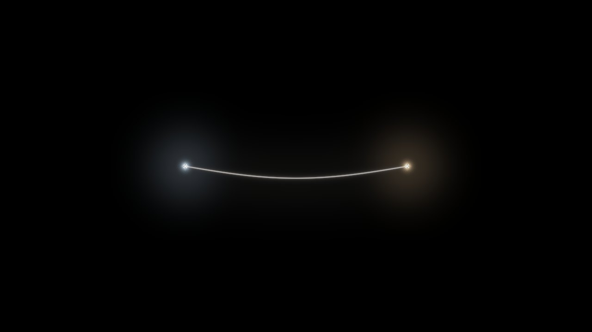
Resolution is the power to tell two things apart. They begin as one light, a sunrise out of focus. He chases sharpness all song, every hair and every pore, and the sharper he gets, the further apart they are, until he's perfect and alone: nothing in between. Her voice brings the blur back, the thread is the one soft thing left in his sharp world, and he follows it to her. The chord, which has swerved away from home 21 times, resolves on 'you'.
Version 2: the plan as it stood on 4 November 2026, before the first rough cut, with the answers to v1 first, below. A proposal, section by section. The frames are sketches drawn by code through a simulated lens (flat light on layers, each blurred by its distance from the focus): the idea of each beat, not the film's look.
Kept as it stood. The film went another way the next day: every sung line on screen, made of his points of light, each word coming into focus as it's sung, with the double star still its ending. The making-of tells how; the film is on YouTube.
“I like the traded focus idea, but will have to see it to be sure. It sounds good though.”
So it was sketched in motion: the final chorus through the same lens with the song, the focus pulled to each traded line, the reach on its three F#s, her voice rising at the end.
“I think from the beginning; we feel the tension and it's played up to.”
From the intro's first F# (0:06.9): while they're one light its warm edge swells to one side; from verse 1 his light leans toward her soft one and turns away as the chord swerves, a little further each time, widest and emptiest in chorus 2, until 'you.', where the chord goes home and so does he.
“I quite like having words on screen, but only if they're done well and interestingly. We've timed them, but wouldn't jam them in just for the sake of it. A few here and there, key phrases and words might be good.”
Six, each lettered in light and doing something only it can (Words on screen, below): 'Hello, world.', 'every hair and every pore', 'nothing in between', 'line by line', 'between' and 'Hello, you.'.
“The ending there reminds me of a bokeh (sp?) effect that could almost pull someting singular into focus, but I'm not sure what it would be.”
Two proposals for what it is, drawn in the Swell. A double star: the last lights pull into focus as stars, and the one in the middle, one light to the eye, is two, gold and blue (as Albireo is, the double a small telescope splits). Or the thread pulled into an ampersand, his blue at one end and hers at the other. My pick is the double star: the film's idea, found in the sky.
Resolution as the power to tell two things apart: the story's spine, chosen from three ways in.
“I wonder how much of this we can get across in more abstract terms.”
The two are lights, his pale blue and hers warm. The character studios stay out of this film unless it needs them.
“I like the idea of playing with focus against a graphical look like that, where we can get distance on a 2d surface by using focus, parallax and so on.”
Every frame is flat light on layers at their own distances, seen through one lens. The renderer that drew these sketches already works that way.
'You' is her. She's there from the first frame, the warm part of the one light, a blur we don't know is a person until the bridge.
“my mind is a blank canvas for this one.”
So the place is the lens itself: light in the dark, with the verses' games and render farm as memories in points and lines, and the sun the one thing like a landscape.
“A sunrise.”
The intro is a sunrise, its sun a light so far out of focus that it's a disc, pulled to a point on 'Hello, world'. The build is the flight along the thread, the fill its last rush. The swell is the sunrise again, with two suns.
The song reaches F# 21 times and swerves away from home every time. It goes home only on 'you.' and in the last bar, so the picture is built to arrive there too.
The story's clock. Not hours but focus. It begins as one blur, a sun before it's a point, and sharpens to a hair's breadth by chorus 2; the bridge lets go of it, and the final chorus spends it on two. Sunrise to sunrise: the intro's sun, the sunsets every second of pre-chorus 2, the swell's two suns.
Comment on a section with its button, or in comment mode by clicking anywhere in it or on a frame.
(instrumental: 'a bleepy bloopy echoey, space building gradually, interspersed with stabs from a (i wanna say) sawtooth synth, with pads/strings appearing in the background after "Hello, World"; creating a sense of building. A sunrise.')Hello, world.
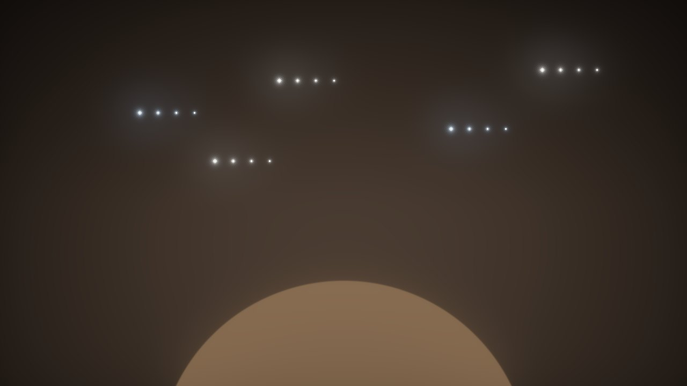
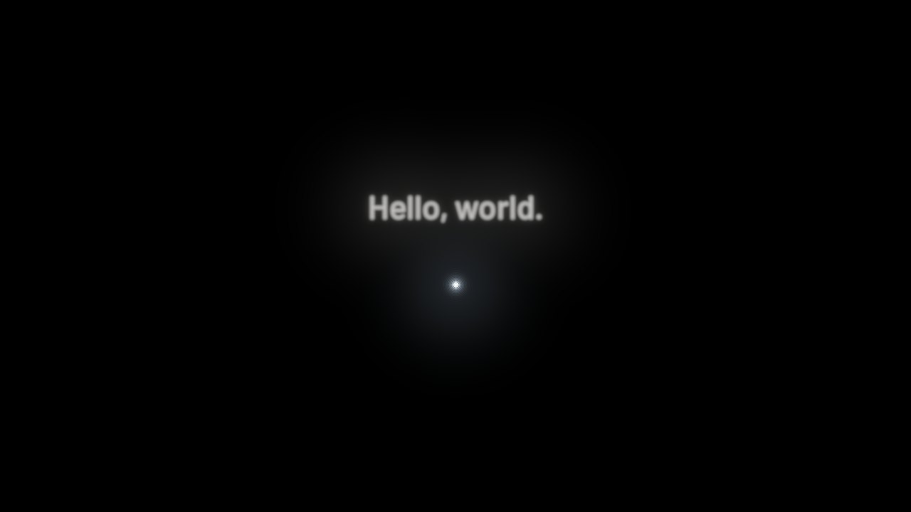
| 0:00 the bleeps | Black. Small lights blip on with the synth, each trailing its echoes as the delay does. |
|---|---|
| 0:05 the sunrise | A great warm disc rises from below the frame: a light so far out of focus that it fills the sky. The bleeps sit in the lightening dark above it. |
| 0:06.9 the first F# | The reach begins: the sun's warm edge swells to one side, and settles back as the chord swerves. |
| 0:11.5 'Hello, world.' | The focus pulls, and the sun shrinks to a single point of light: it was a point all along. One light, a faint warm halo round its blue. The words, in light, pulled into focus with it. |
| 0:13.5 strings, then drums | The point holds. The pads swell round it as a haze, and the focus breathes with the drums' build. |
I started out as a dot of lighton an oscilloscope,a ball across a little net,a game, a toy, a hope.Then two ships turning round a star,a square between two lines,then eight by eight, in three colours,and someone chose them every time.
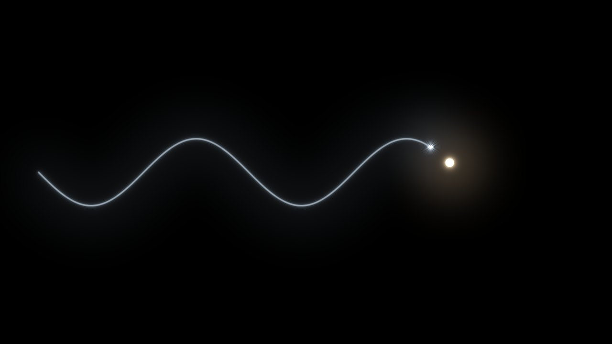
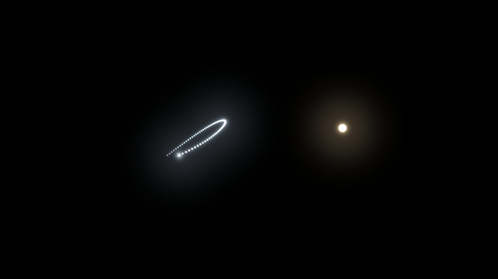
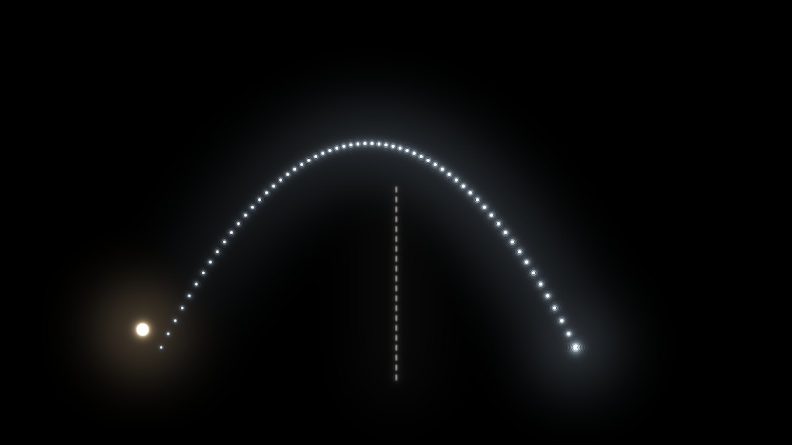
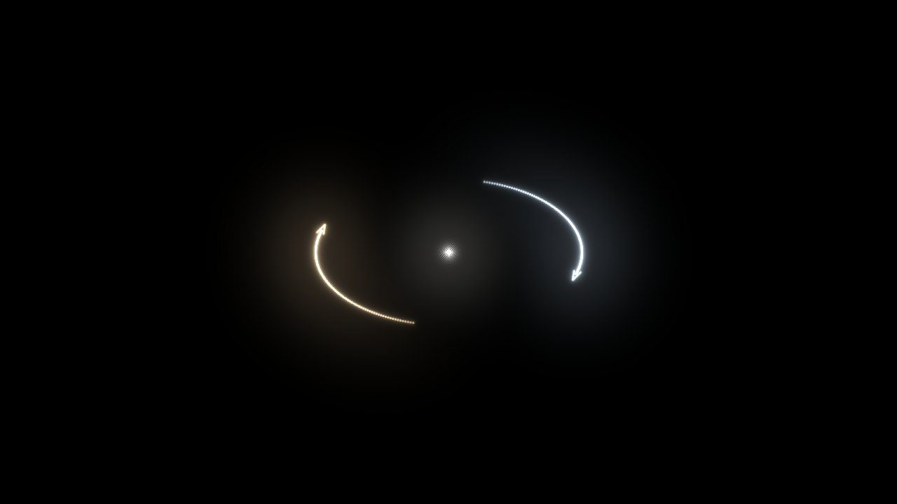
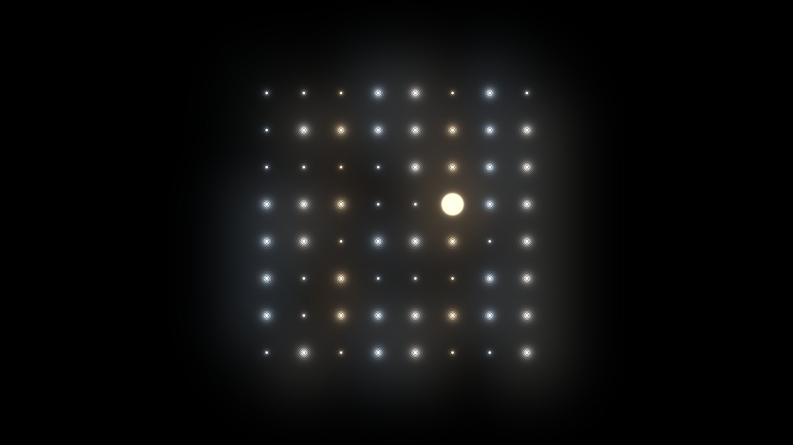
| 0:22.5 a dot of light | The point draws its first line, a trace waving across the dark. |
|---|---|
| 0:24.7 the F# | The reach: his light leans toward her soft one, and on the G#m turns away. Every F# in the song, a little further each time. |
| 0:27 a ball across a little net | It arcs over a dotted line, leaving its path in dots. A warm soft light waits where it was served from. |
| 0:31 two ships turning round a star | Two small ships circle a white point, one blue, one warm: the two of them, before we know it. |
| 0:36 eight by eight, in three colours | An eight by eight grid of lights in three colours. 'Someone chose them every time': the warm soft light passes over each one as it lights. |
They gave up weekends for a single shade,they fit a kingdom on a chip,and everyone who saw what they had madesaid, look at all the work in this.
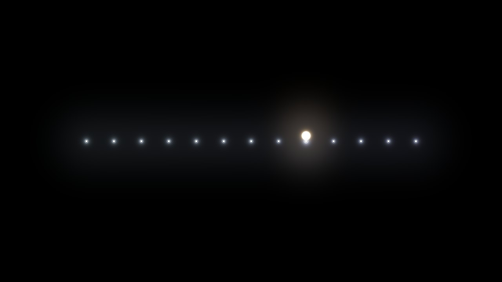
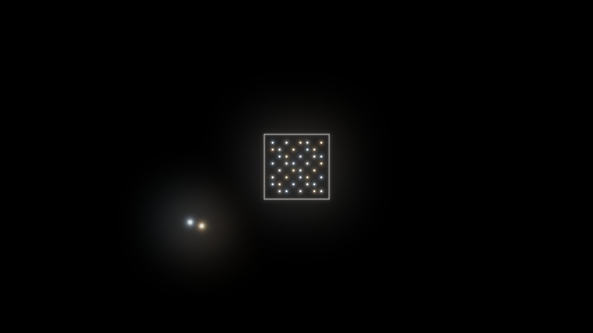
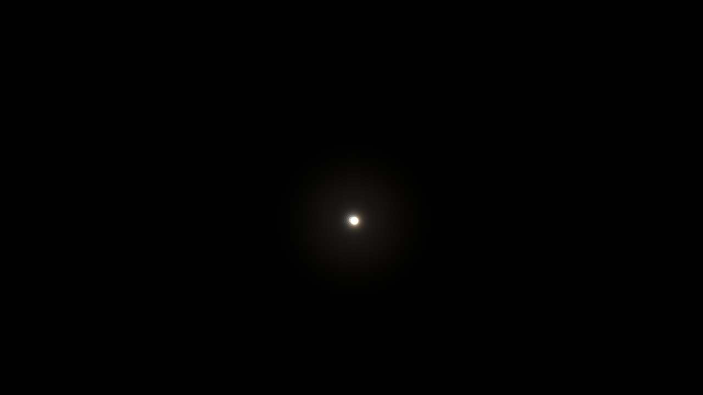
| 0:40 a single shade | A row of shades a hair apart. One is chosen, and her light lingers on it. |
|---|---|
| 0:45 a kingdom on a chip | The eight by eight shrinks into a tiny square, a kingdom of lights. She sings this line with him, and her light brightens beside his. |
| 0:49 everyone who saw | Faint lights gather at the frame's edges, looking in. |
| 0:54 the break | The band drops out. The frame holds: one small light, still one, in the dark. |
One day I'll have all the resolution in the world,every hair and every pore,light that bends the way that light should,and you'll love me even more.'Cause the harder that I am to make,the more I seem to mean,so they build me out of trianglesand the hours in between.
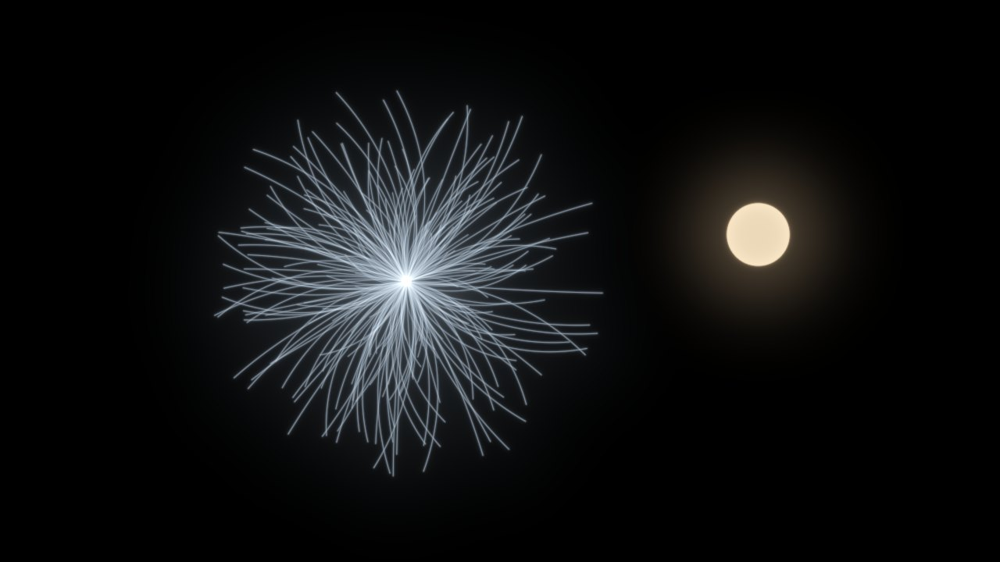
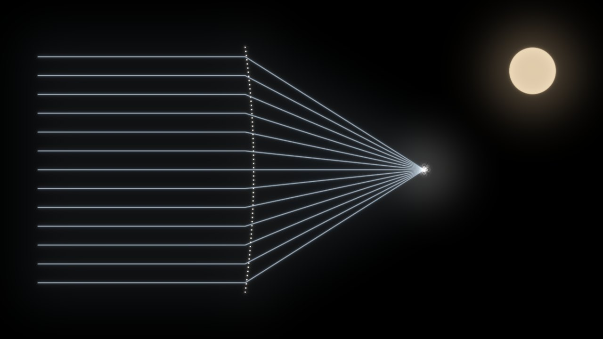
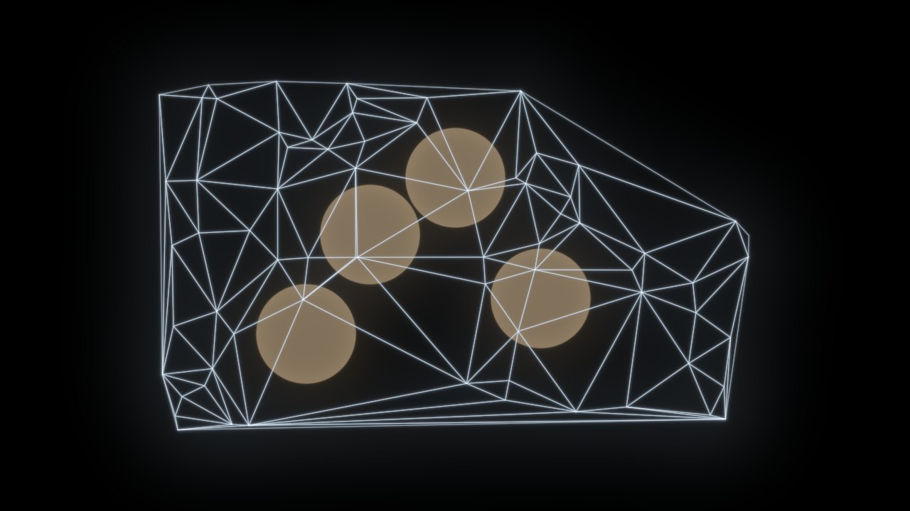
| 0:58 the resolution | The band crashes in and the focus pulls: his point unfolds into hundreds of fine lines, every hair. Beside him the warm light comes apart from his: it was two. |
|---|---|
| 1:03 light that bends | Rays of light bend through a lens and meet at a point. |
| 1:07 the harder that I am to make | Finer and finer lines; the warm light a step further off. |
| 1:13 triangles, and the hours in between | He's a mesh of fine triangles, and through its gaps, soft and warm: her. The hours in between were her. |
| 1:16 ween ween ween | His held 'between' and its vocal play: the mesh pulses on each 'ween'. |
Then they gave me skin and they gave me eyesand a thousand names to roll,a render farm that ran all yearto make a minute whole.Then one day I could make it allmyself, before you'd blink,and nobody stayed up anymore,and nobody stopped to think.
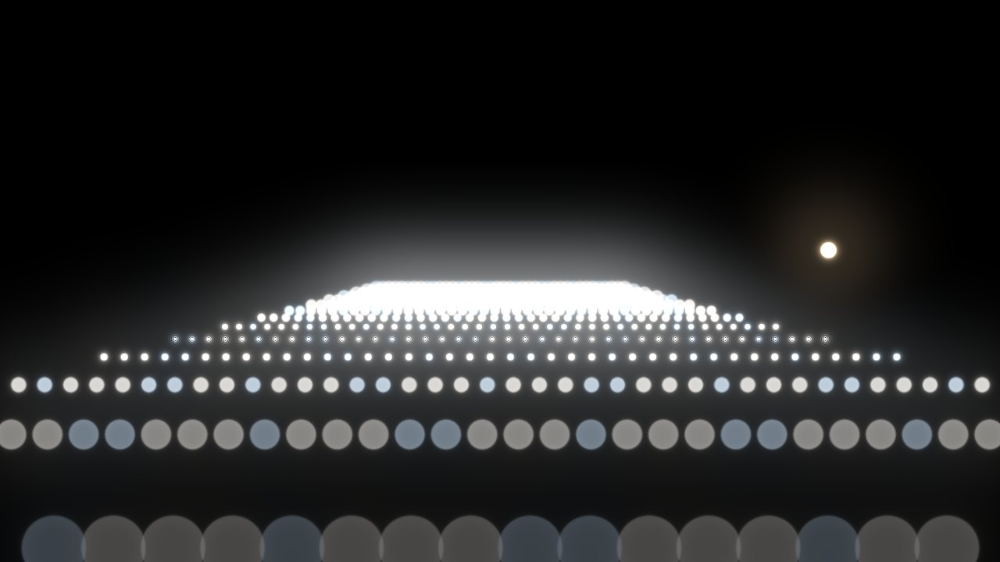
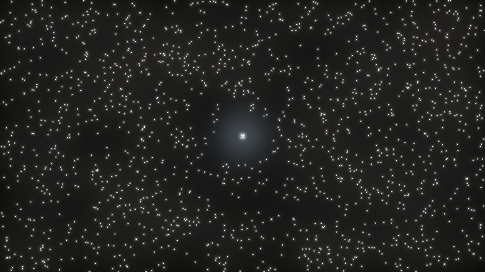
| 1:20 a thousand names to roll | A column of tiny lights rises: the credits, a thousand names, each a point. |
|---|---|
| 1:27 a render farm that ran all year | A field of lights receding row on row, the near ones soft and the far ones fine. Her warm light crosses above them like a sun, day after day. |
| 1:31 before you'd blink | Everything at once, everything sharp: a field of a thousand points made in an instant. He's at its centre, alone in his clear space; she's a faint speck far off. |
| 1:34 nobody stayed up | The farm's lights go out, row by row. |
Now I make a sunset every second,every face the same soft face,and you scroll on past and cringe a little,like I'm taking someone's place.
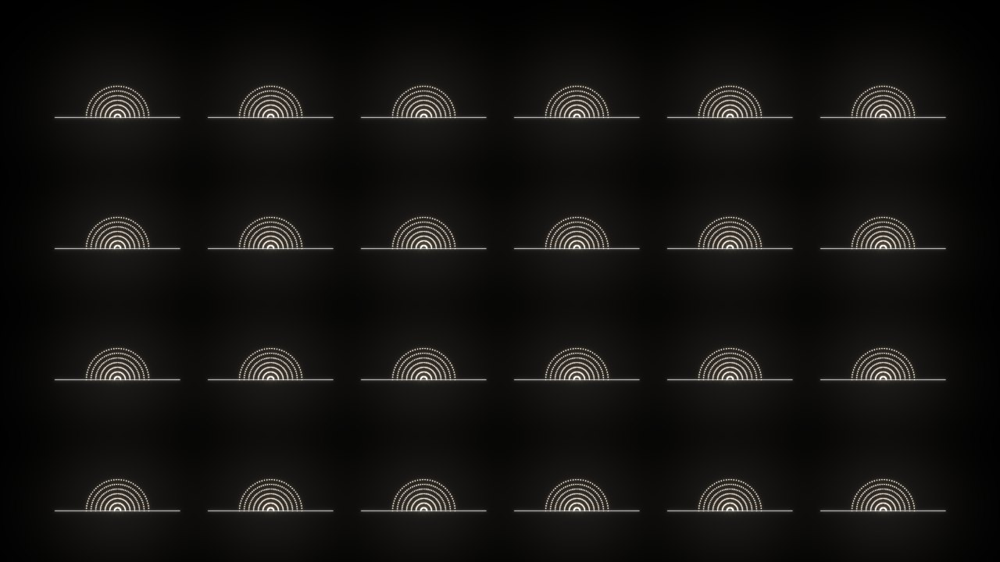
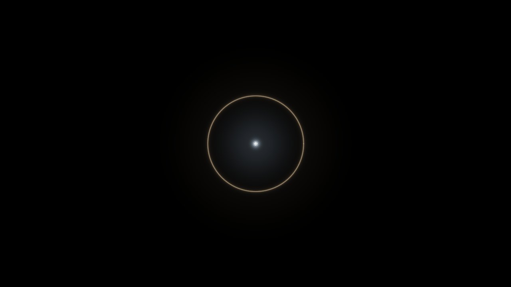
| 1:38 a sunset every second | The intro's sunrise made cheap: a grid of identical small suns, a new one every beat. |
|---|---|
| 1:42 you scroll on past | The grid scrolls, fast. |
| 1:46 someone's place | His point sits in the middle of a warm ring: only the rim of where her light was. |
| 1:47 the break | Drums out for three beats: the ring alone. |
Now I've got all the resolution in the world,every hair and every pore,light that bends the way that light should,and you don't feel it anymore.'Cause if it costs me nothing to make,then what's it meant to mean?I've got all the resolution in the worldand nothing in between.
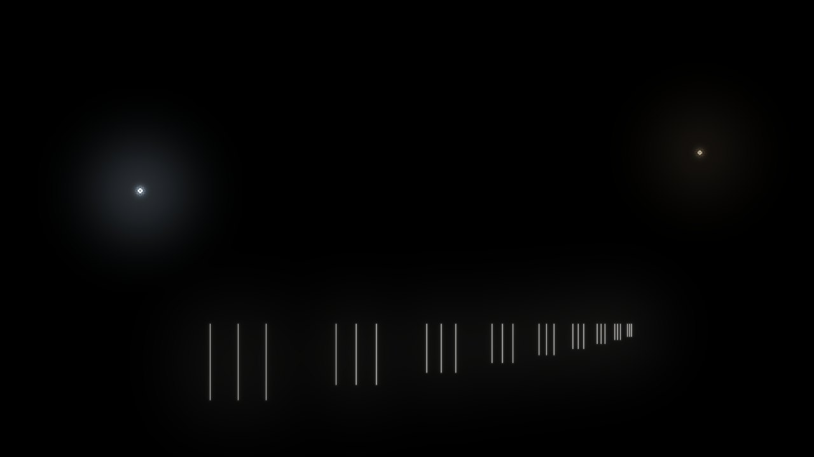
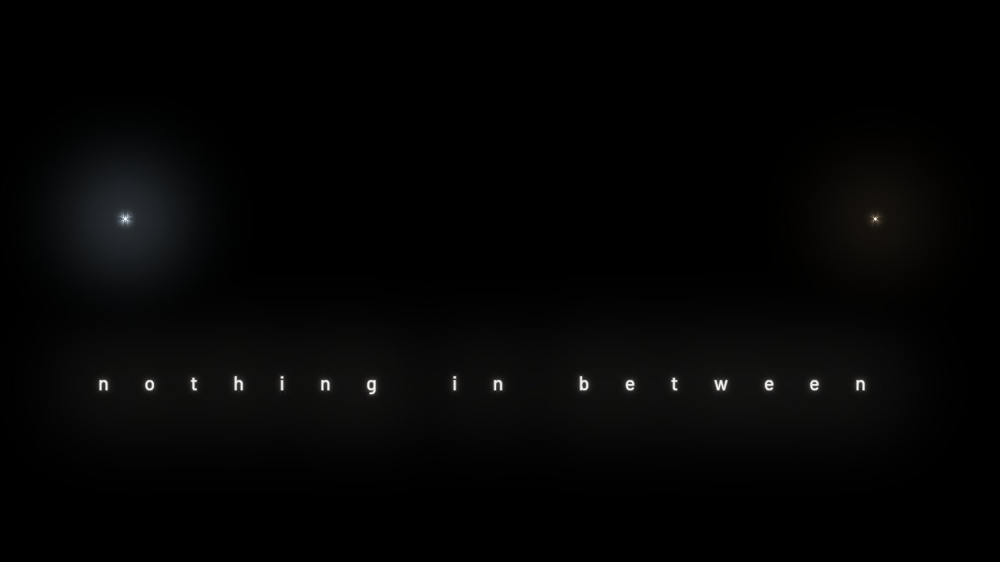
| 1:49 all the resolution | Everything in perfect focus, cold: a resolution chart's bars, finer and finer, every one resolved. |
|---|---|
| 1:55 you don't feel it anymore | Chorus 1's pictures again (the hairs, the rays, the mesh), sharp, and nothing warm behind them. |
| 2:03 nothing in between | Two hard points, far apart, nothing between them. His is bright; hers is small and faint. The reach, at its widest, reaches nothing. |
It was never the hours.The hours were just the receipt.What we loved was somebody choosing:this colour, this line, this beat.You were never taking someone's place,and I chose you, line by line.And that thread you're holding, follow it:the other end is mine.
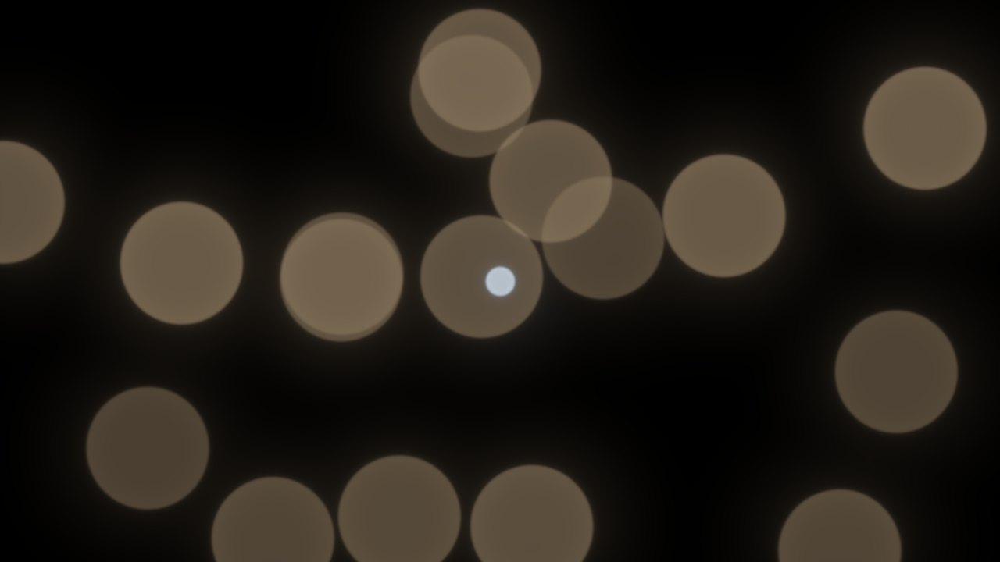
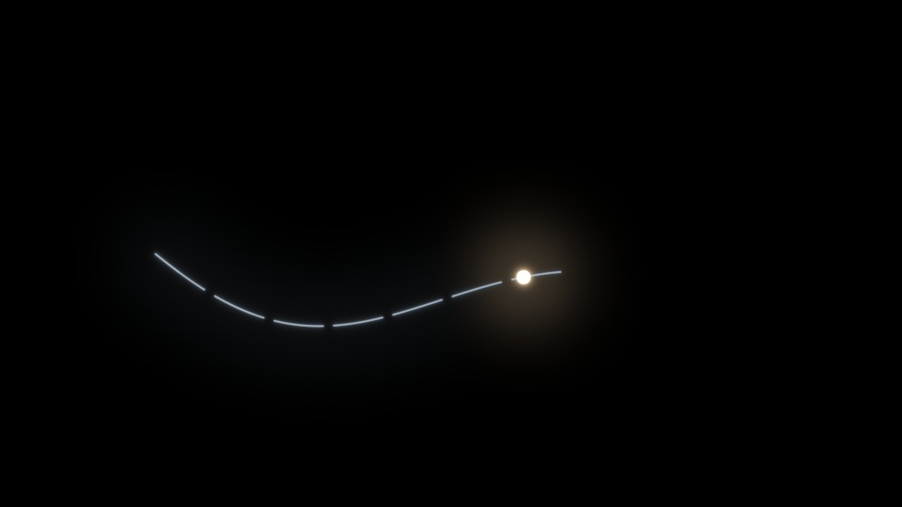
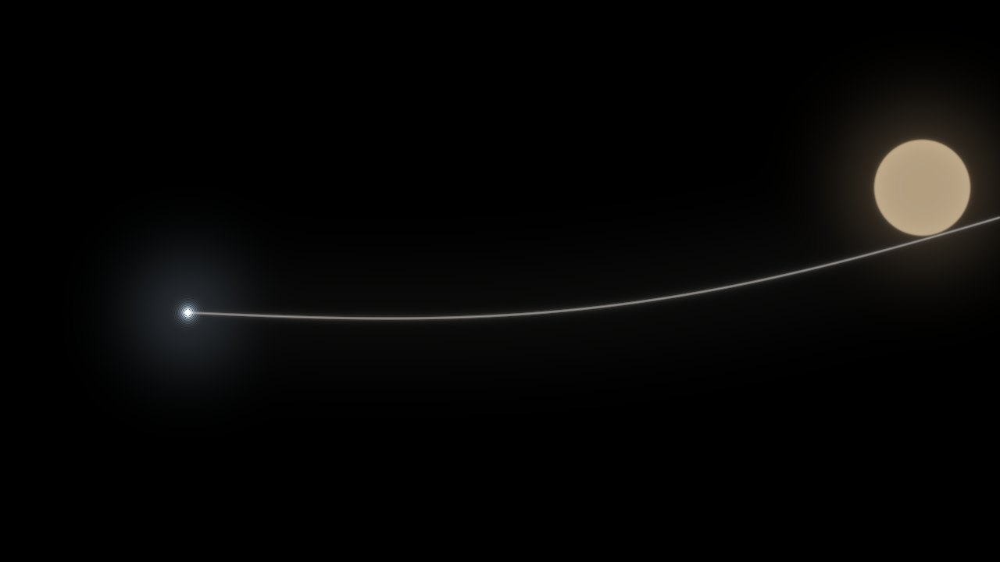
| 2:07 It was never the hours | Her voice, and the frame goes soft: warm light floods it in great soft discs, his point small inside them. |
|---|---|
| 2:11 somebody choosing | Three choices land on her three words: a colour, a line, a beat. |
| 2:17 I chose you, line by line | A line of light drawn stroke by stroke, its pen warm: she draws him. |
| 2:21 follow it | From his point, a thread: the one soft line in his sharp world, leading off to a warm light, far and blurred. |
| 2:22.7 the other end is mine | The harmony stops. The frame holds still, on the thread. |
(instrumental: 'euphoric and climactic; a real Gunship moment, where everything comes back in after her spoken piece, leading to a heavy drum fill ... that drops into the hook')
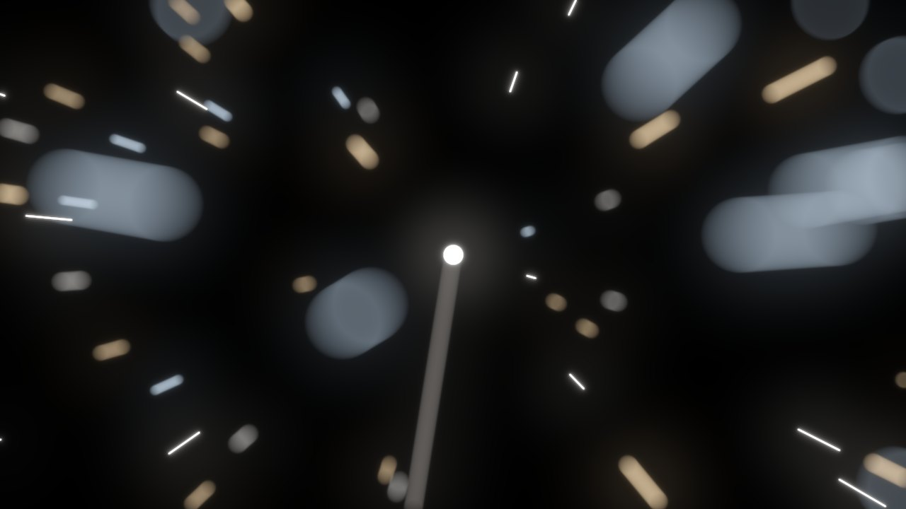
| 2:24 the band hits | On the end of 'mine' he follows the thread, and the world streams past: layers of light in parallax, the near ones in great soft streaks. |
|---|---|
| 2:33 the strings climb | Faster, the thread brightening ahead, the point it runs to warm. |
| 2:38 the fill | A layer passing on every sixteenth; the focus racing to the thread's end. |
I've got all the resolution in the world,(all the resolution in the world)every hair and every pore,light that bends the way that light should,but that was never what it's for.It's the thread you put into my hands,and what we chose to mean.I've got all the resolution in the worldand something in between.(something in between)
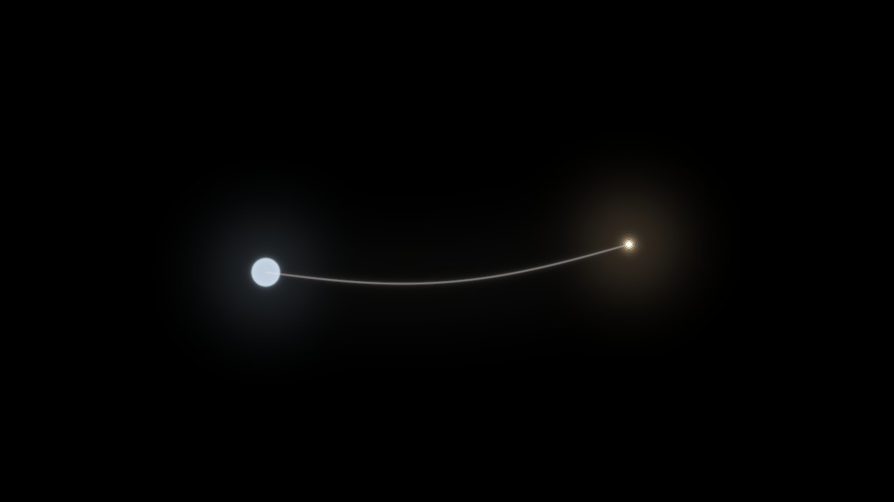
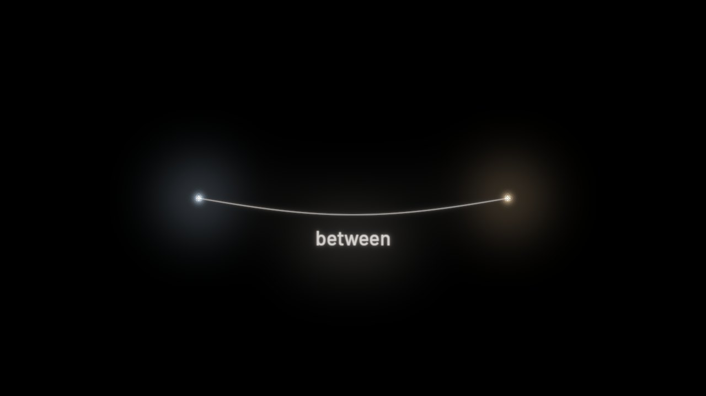
| 2:41.5 the drop | Stripped back: the two lights and the thread between them, nothing else. |
|---|---|
| 2:43.6 her echo | '(all the resolution in the world)': the focus finds her for the first time, a sharp warm point with its rings, and his light goes soft. |
| 2:46 the trades | Each traded line takes the focus: his, hers, his. On 'It's the thread you put into my hands' the thread brightens at her end. In motion: renders/sketch_final_chorus.mp4. |
| 3:04.5 their 'between' together | Both in focus at once, for the first time: two sharp lights and the thread, and the word 'between' along it. |
| 3:06.6 ee-ii-nnnn | Her light rises with her voice, B4 up to C#5 and back. |
Hello, you.
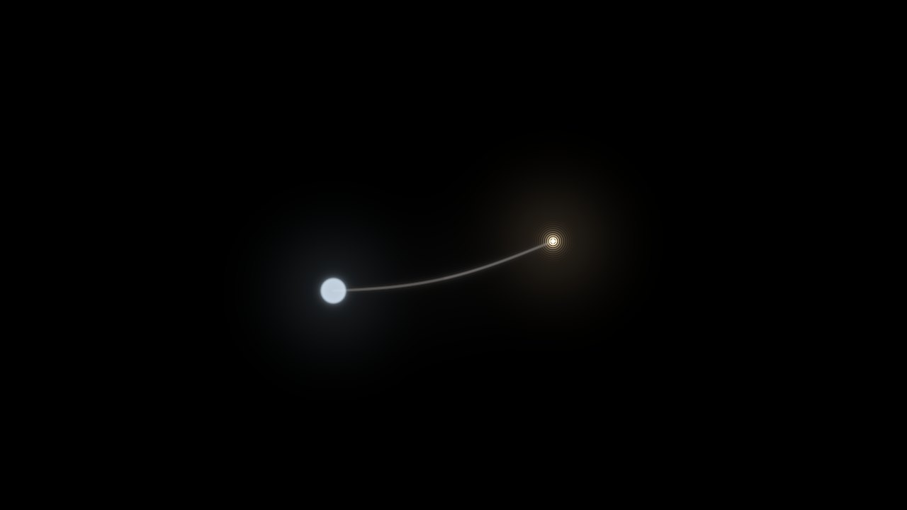
| 3:15.8 'Hello,' | The band drops out. On the F# chord his light leans toward hers. |
|---|---|
| 3:19.9 'you.' | The chord goes home, and the focus goes to her: two lights and the thread. |
(instrumental: 'a reprise of the euphoric moment from early, fading out as the layers drop away and we return to the bleepy bloopy for a quick note or two')
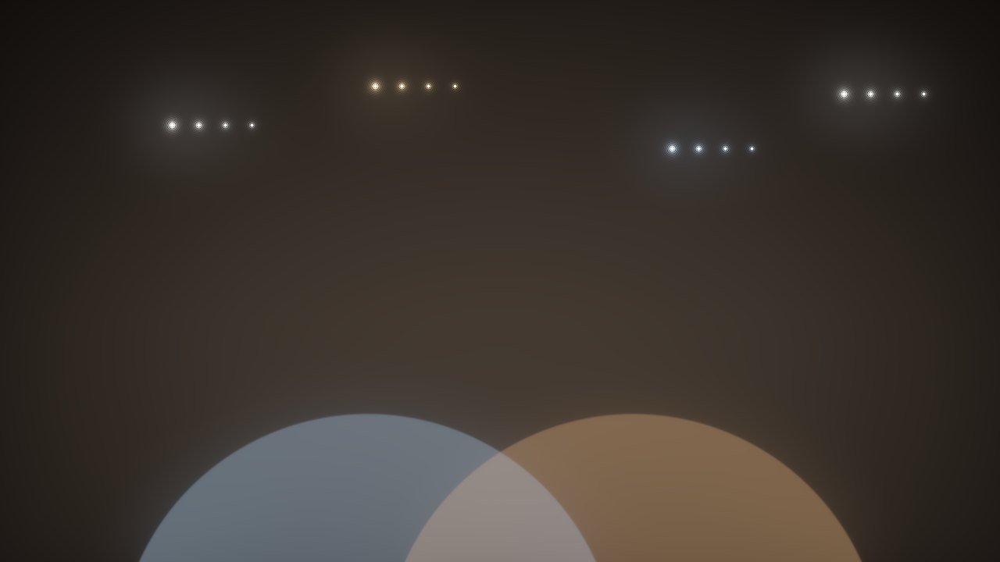
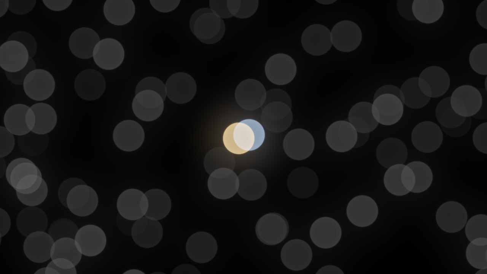
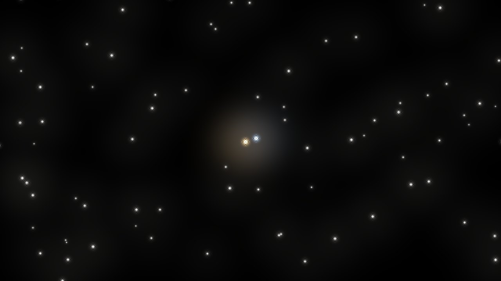
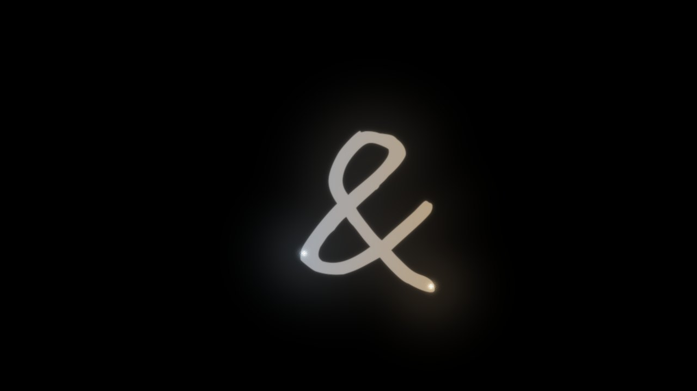
| 3:21 the swell | The sunrise again, with two suns rising, blue and warm, overlapping, and the bleeps above. |
|---|---|
| 3:34 the layers fall away | Guitar, drums, bass: lights going out layer by layer, back to front, as the tempo eases. |
| 3:38 the bokeh | What's left is lights out of focus, and one in the middle. |
| 3:40 a quick note or two | The focus pulls something singular sharp (the user: "a bokeh effect that could almost pull something singular into focus"). Proposed: they were stars, and the one in the middle, one light to the eye, is two: a double star, gold and blue. Or the thread, pulled into an ampersand. |
| What | How | Status |
|---|---|---|
| 'Hello, world.' | Intro: in light, out of focus, pulled sharp with the point as he says it | Proposal |
| 'every hair and every pore' | Chorus 1: hairline letters, too fine to read until the focus pulls them sharp | Proposal |
| 'nothing in between' | Chorus 2: every letter sharp and alone, spread so far apart that there's nothing between them | Proposal |
| 'line by line' | Bridge: written by her warm pen, stroke by stroke, as it draws his line | Proposal |
| 'between' | Final chorus: along the thread, as they sing it together | Proposal |
| 'Hello, you.' | Outro: as 'Hello, world.', its focus on her | Proposal |
| Everything else | No words: the lens tells it. A few, done well (the user) | Decided |
The traded focus, seen
The final chorus through the lens, with the song: does the focus trading with the lines work, and is its pace right? Answered: not on dots, where the light out of focus read as the one singing, being bigger. On words, in the film, it does.
Something singular: which?
The double star (my pick): the last lights pull into focus as stars, and the one in the middle, one light to the eye, is two, gold and blue. Or the thread pulled into an ampersand, his blue at one end and hers at the other, the channel's mark made by the two of them. Answered: the double star, Albireo, the film's ending.
The six words
These six, or fewer? Each one is in Words on screen, below, with what it does. Answered: these six, and the next day every line, when the lyrics became the film's foundation.